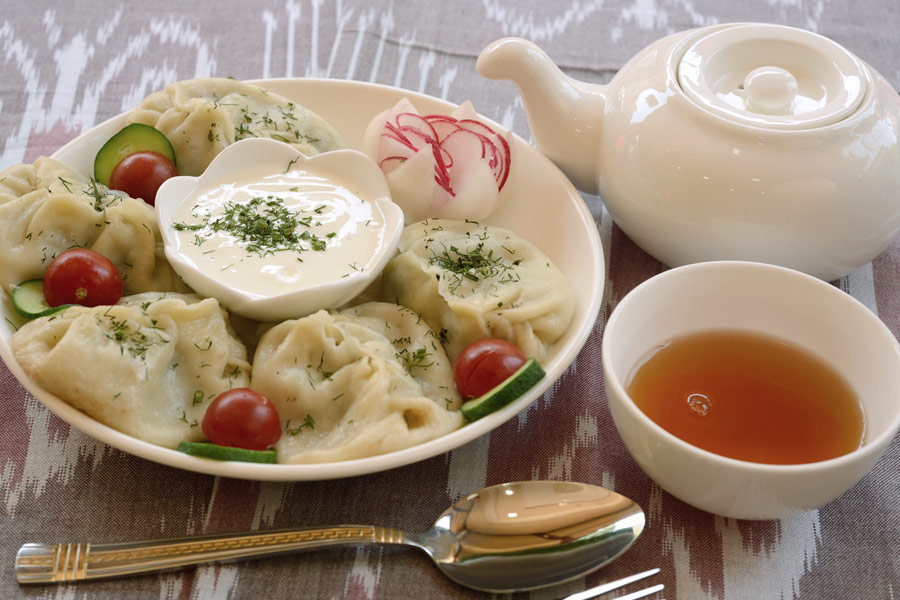

MANTI RECIPE

Uzbek dough dishes are very diverse, yet a steamed meat dumpling called manty (manti) is a favorite of many. With its delicate dough and juicy filling, manty is filling and satisfying.
Ingredients:
- 2 cups all-purpose flour, plus more for dusting
- ½ teaspoon salt
- 2 large eggs
- 2 onions, peeled
- ½ pound ground beef
- salt and pepper to taste
- 3 tablespoons vegetable oil
- 1 tablespoon minced garlic
Directions:
- Combine flour and salt in a mixing bowl. Add eggs and water, mixing well with your hands. Add more water, if needed, to form a soft dough. Cover and set aside for at least 30 minutes.
- Shred onions and place them in a colander or sieve set over a bowl; drain and discard juice. Combine drained onion, ground beef, salt, and pepper in a large bowl; mix well with a spoon until mashed. Set filling aside.
- Lightly flour a work surface and a large plate.
- Divide dough in half. Working with one piece at a time, roll dough on the floured surface into a rectangle, as thin as you can. Cut into 2-inch squares with a knife or pastry wheel.
- Bring a large pot of salted water to a boil over medium-high heat. Cook manti in boiling water until filling is no longer pink and dough is tender, 20 to 25 minutes. Drain well.
- Divide manti onto 4 plates. Spoon yogurt sauce over manti and drizzle each serving with warm red pepper oil.
ENJOY!
Back to main page